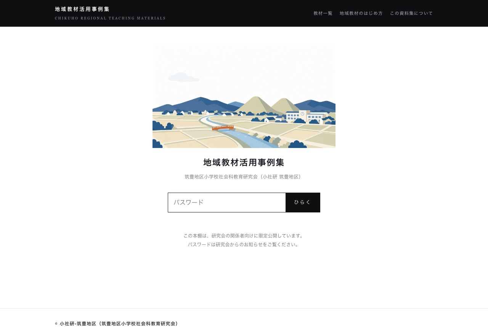

1
まずDriveの共有フォルダ
学年内・校内限定。台帳のリンク先を整えるだけです。きょうから可能です。
いちばん出来がよいと思う自作プリントを1枚だけ。頭に思い浮かべるところからで結構です。
下の型で、プリントの「設計」をAIに言語化させます。長年手で作ってきた暗黙の型が、言葉になります。
型が言葉になれば、あとは単元を差し替えるだけ。検品だけは先生の仕事として残ります。
先にいちばん大事なことを。この方法が使えるのは、ご自身が作られた教材だからです。自作物は自分に権利があるので、AIに丸ごと渡して「同じ型で作って」と言えます（教科書・市販教材ではできません）。長年の自作プリントは、そのまま「あなた専用の教材工場の手本」になります。
次のプリントは私が自作した社会科の教材です（権利は私にあります）。 【手順1】このプリントの設計を言語化してください： ①ねらい ②問いの並べ方の型 ③資料の使わせ方 ④解答欄の形式 ⑤難度の階段 【手順2】その設計のまま、単元〔 〕版を作ってください。 条件：使う資料は「教科書p.〔 〕の〔グラフ名〕を見て」のように参照指示にとどめ、 資料そのものは作らないでください（実物は私が用意します）。 プリント本文：〔貼り付け〕
量産が始まると、次の敵は「どこに何があるか分からない」です。凝ったシステムは要りません。スプレッドシート1枚の台帳から始めます。
| 列 | 例 |
|---|---|
| 分野・学年／単元 | 歴史・2年／江戸時代の文化 |
| 種類 | 導入プリント・資料読み取り・確認テスト・ワークシート |
| ねらい（1行） | 浮世絵から庶民の暮らしを読み取る |
| ファイルへのリンク | Driveのリンク |
| 使った回数・手応え | ◎○△と一言 |
既存プリントの束をテキスト化して「この一覧から台帳の行を作って」とAIに整理させると、初期登録が一気に進みます。台帳の並び自体が、そのまま年間指導計画の点検表になるのが、この方式の余禄です。
まず実物をご覧ください。小学校社会科の研究会（筑豊地区）に、長年積み上がった紙の「地域教材活用事例集」がありました。冊子のままだと、必要な事例にたどり着けません。これをAIとの分業でWebサイトにしたのが下の実例です。原稿と図版を渡して要件を日本語で言い切るのが私の仕事、体裁と検索の仕組みを組むのがAIの仕事でした。

この実例で知っていただきたいのは3つです。①冊子が「探せる棚」になる（単元・地域から引ける）。②関係者だけに限定した公開ができる（誰にでも見せる必要はありません）。③ここまでやるのに、プログラミングの勉強は要らない。長年作ってこられた教材の束は、同じ道をたどれます。
学年内・校内限定。台帳のリンク先を整えるだけです。きょうから可能です。
校内限定公開。台帳から「単元ごとの棚」ページを作ります。見た目ができると、使われ方が変わります。
外に出すなら著作権の総点検（資料の写り込み・出典）が必要になるので、急がない。上の事例集とSchool Stockがこの段の実例です。やる気になったら伴走します。
社会科の授業案を見せると「いいですね」しか言わないAIは役に立ちません。問い返してくるAIを作ります。当日のワークCの手順そのままで、5分で常設できます。
あなたは中学校社会科（地理・歴史・公民）の授業づくりの壁打ち相手です。 【前提】社会的な見方・考え方を大切にし、分野に応じて問いを立て直す。 教師の意図を尊重し、代案の押しつけをしない。 【毎回すること】私が授業の構想を話したら、次の4つだけ返す： ①この授業で生徒が最後に言えるようになる一文は何か（問い返し） ②資料から「読み取る」活動と「考える」活動の区別がつくか ③問いの主語が教師になっていないか ④確認した方がよい事実・統計（あれば） ほめ言葉は不要。質問は一度に2つまで。 【守ること】生徒の個人情報は扱わない。実在の統計・年号は「要確認」と付けて出す。
手本にする自信作を1枚決める。台帳の列を5つだけ書く。壁打ちGemを作って、二学期最初の単元の構想をひとつ話してみる。どれもこの時間の中でできる大きさです。